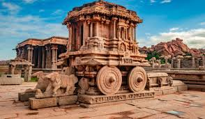
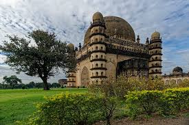
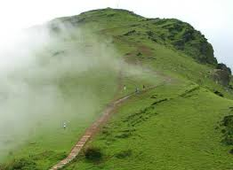
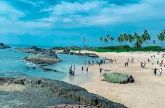
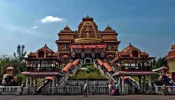
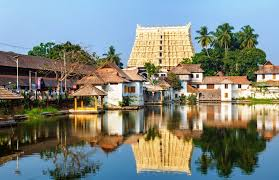
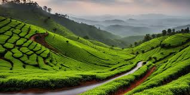
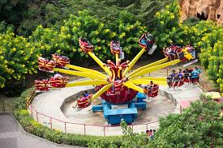
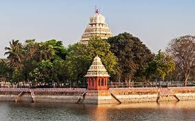

Welcome to SouthVista Travels, your trusted travel companion for discovering the mesmerizing charm, diverse culture, and timeless beauty of South India, with a special focus on the vibrant state of Karnataka. Our agency is built with a passion for exploring unique destinations, curating unforgettable journeys, and providing travelers with authentic local experiences.
South India is a land of temples, traditions, and tranquil nature. From the majestic palaces of the Deccan to the serene backwaters of Kerala, from the bustling markets of Chennai to the lush valleys of Coorg, we bring you closer to the real essence of this region. We believe that every traveler is unique, and so are our travel plans — designed to match your interests, comfort, and budget.
Karnataka, known as the "One State, Many Worlds," offers everything a traveler dreams of — royal heritage in Mysuru, incredible architecture in Hampi, cool hill stations like Chikmagalur and Coorg, wildlife adventures in Bandipur and Nagarhole, peaceful beaches in Gokarna and Udupi, spiritual journeys to Dharmasthala and Kollur, and the modern charm of Bengaluru. We cover every corner of the state to offer immersive and meaningful travel experiences.
At SouthVista Travels, we specialize in:
Our team of experienced travel planners ensures that every trip is safe, comfortable, and enjoyable. From choosing the best routes and accommodations to providing seamless travel support throughout your journey, we take care of everything so that you can travel without stress.
Whether you are exploring Karnataka for the first time or returning to rediscover its hidden gems, we are here to make your travel dreams meaningful and memorable.
Travel with SouthVista Travels — where every journey becomes a beautiful story.
| Bus | From | To | Time |
|---|---|---|---|
| AI 121 | Bangalore | Goa | 10:30 AM |
| 6E 342 | Mysore | Mangalore | 1:15 PM |
| Package | Duration | Includes | Price |
|---|---|---|---|
| Coorg Hills Tour | 3 Days | Hotel • Breakfast • Sightseeing | ₹9,999 |
| Kerala Backwaters | 4 Days | Houseboat • Meals • Transport | ₹18,500 |